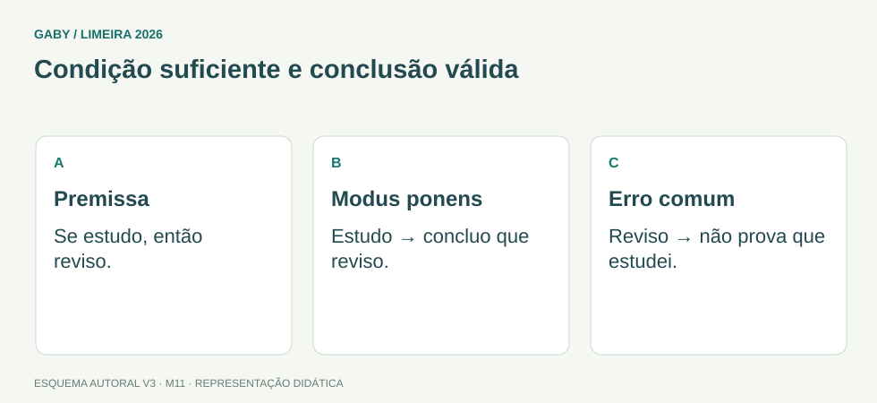

Objetivos do módulo
- Reconhecer proposições e conectivos.
- Negar sentenças simples e compostas.
- Avaliar argumentos básicos sem confundir verdade com validade.
Condição suficiente e conclusão válida

Descrição em texto do esquema
- Premissa: Se estudo, então reviso.
- Modus ponens: Estudo → concluo que reviso.
- Erro comum: Reviso → não prova que estudei.
Oficina visual · aplique o esquema
“Se o documento é sigiloso, o acesso é restrito. O acesso não é restrito.” Qual conclusão segue dessas premissas?
Atividade autoral complementar da V3. Registre sua resposta; a resolução está no arquivo de gabarito e revisão.
Mapa do conteúdo
1. Proposição
Proposição é sentença declarativa à qual se pode atribuir valor verdadeiro ou falso. Perguntas, ordens e exclamações normalmente não são proposições no sentido lógico.
2. Conectivos
| Símbolo/forma | Leitura | Ideia |
|---|---|---|
| p e q | conjunção | ambas verdadeiras |
| p ou q | disjunção inclusiva | ao menos uma verdadeira |
| se p, então q | condicional | só é falsa com p V e q F |
| p se e somente se q | bicondicional | mesmo valor lógico |
3. Negação
Negar “p e q” produz “não p ou não q”; negar “p ou q” produz “não p e não q” (Leis de De Morgan). Negar “todo A é B” é afirmar “existe pelo menos um A que não é B”.
4. Condicional e contrapositiva
“Se p então q” é equivalente a “se não q então não p” (contrapositiva). Não é equivalente à inversa “se q então p”.
5. Validade de argumentos
Argumento válido é aquele em que, se as premissas forem verdadeiras, a conclusão não pode ser falsa. Isso é propriedade da forma, não garantia de que as premissas são de fato verdadeiras.
Exemplos resolvidos passo a passo
Exemplo 1
Situação: Negue: “João estuda e trabalha”.
Exemplo 2
Situação: Se chove, a rua molha. A rua não molhou.
Exemplo 3
Situação: Negue “Todos os documentos estão assinados”.
Pegadinhas e erros frequentes
- Negar “todos” por “nenhum”.
- Confundir inversa com contrapositiva.
- Tratar “ou” lógico como necessariamente exclusivo.
Resumo de prova
- Proposição tem valor V/F.
- Conjunção exige ambos V.
- Condicional só é falsa em V→F.
- Contrapositiva é equivalente.
- Negação de “todos” = “existe ao menos um que não”.
Exercícios do módulo
Resolva sem consultar o arquivo de gabarito. As questões são autorais e construídas para treinar os conceitos do edital.
- proposição verdadeira
- proposição falsa
- bicondicional
- não proposição
- Ana trabalha
- Ana estuda
- Ana não estuda ou não trabalha
- Ana não estuda e não trabalha necessariamente
- Alguns passaram
- Ninguém passou
- Pelo menos um não passou
- Todos não passaram
- p V e q F
- p F e q V
- ambas V
- ambas F
- Se não q, então não p
- Se não p, então não q
- p e q
- Se q, então p
- ambas falsas
- p é falsa sempre
- ao menos uma é verdadeira
- exatamente uma sempre
- não usa lógica
- preserva verdade das premissas para conclusão
- tem premissas necessariamente verdadeiras no mundo
- é sempre longo
- Nenhum aluno faltou
- Todo aluno faltou
- Algum não faltou
- Todos faltaram
- Se passo, então estudei
- condicional original
- contrapositiva
- Se não passo, então não estudei
- apenas q é verdadeira
- sempre
- p e q têm mesmo valor lógico
- apenas p é verdadeira
Quando terminar, abra Raciocínio Lógico 11 - Estruturas e Argumentação Lógica - Gabarito e Revisão.
Checklist de domínio
- ☐ Reconhecer proposições e conectivos.
- ☐ Negar sentenças simples e compostas.
- ☐ Avaliar argumentos básicos sem confundir verdade com validade.
Meta do módulo: 80% ou mais nas questões, sem depender de consulta.
Referências e conteúdos auxiliares
- IMPA/OBMEP — Introdução à Lógica MatemáticaMateriais e videoaulas introdutórias para raciocínio e linguagem lógica.
Referências externas de apoio consultadas para a V3 em 27/09/2026. A origem das questões é o material autoral do projeto; estes links não indicam que uma instituição publicou ou validou os exercícios. As páginas externas precisam de internet. Em informática, confira a versão do programa; em legislação, observe o recorte e as regras de atualização do edital.